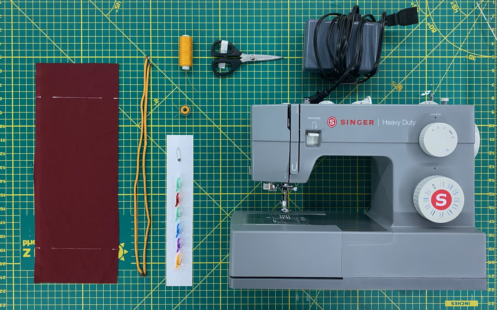

0.2 CYCLING THE NEEDLE
0.2: How to manually cycle the needle
* Add the reason behind this step.

0.3 MATERIALS NEEDED
0.3: Collect all the materials.
* Add the reason behind this step.

0.4 FABRIC TEMPLATE
0.4: Fabric Template
* Add the reason behind this step.
1.0.0 Thread the Machine
1
THREAD THE MACHINE

2.1 PREP THE FABRIC
2.1: Lay the fabric flat and smooth out any wrinkles before cutting.
* Add the reason behind this step.

3.4 CONTINUE STRAIGHT STITCH
3.4: Press the foot pedal and guide the fabric to sew a straight stitch along the edge.
* Add the reason behind this step.

4.3 STRAIGHT STITCH BOTH SIDES
4.3: Both sides of the bag are now stitched — check that seams are even.
* Add the reason behind this step.

5.2 ATTACH SAFETY PIN TO STRING
5.2: Clip a safety pin to the end of the drawstring to make threading easier.
* Add the reason behind this step.

5.6 YOU HAVE A DRAWSTRING BAG!
5.6: Your drawstring bag is complete — pull the strings to close it up!
* Add the reason behind this step.